Session 聊天页：让「当前运行的 Engine」可见
要求：菜单标题就是引擎名——只读，排在 Provider 行之上（不写「Engine」字样）。已按三个决定定稿并实现：借壳不补注、切换中显示去向、额度不进标题。下面的图是真实组件渲染（vite + 假 API；会话数据取 owner 截图里的那个：DeepSeek provider、DeepSeek V4.1 Flash、Max）。
一句话结论：这行放在菜单里解决「打开菜单时看得到」；如果要「不打开菜单也一直看得到」，再叠一个头部常驻 chip（第 ③ 节，可选）。
① 现状
1菜单里只回答「下一条消息用什么」，没有一处说「这次运行由谁在跑」
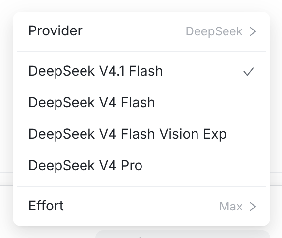
今天的模型菜单：Provider（发给哪个 endpoint）、模型行（✓ 当前模型）、Effort / Speed。没有引擎。
- Provider 行的值（DeepSeek）说的是下一条消息的目标，不是当前这一轮由谁执行。
- 第三方 provider 的会话最需要这一行：模型是 DeepSeek 的，真正驱动的 CLI 是 Claude Code —— 菜单里、header 里都看不出来。
- 底部 chip「DeepSeek V4.1 Flash Max」同样只说下一条消息的模型与档位。
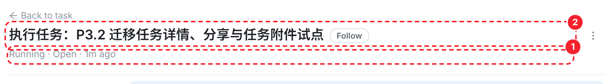
会话 header 也一样（红框 ① 状态行、② 标题行）：没有引擎信息。
② 方案（已实现）
2菜单的标题就是引擎名（只读），Provider 往下才是可点的控件
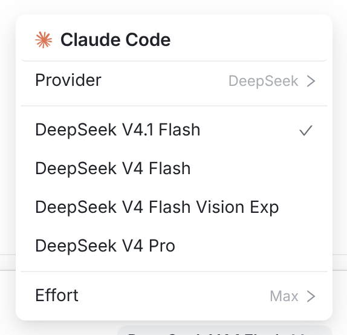
真实组件渲染：标题一行 —— 品牌标 ＋ 引擎名（15px/650、正文色），下压 1px 分隔线；不写「Engine」字样。借壳（DeepSeek 的模型、Claude 的运行时）不补注。
- 「标题」本身就解决了只读语义：没有 chevron、点了不 PATCH 任何配置、hover 不出现选中底色。
- 值取 CLI 自己的产品名（ENGINE_CLI_NAME）：Claude Code / Codex / Kimi Code / OpenCode / Antigravity CLI / DeepSeek Harness。
- 数据是 engineTitleFor(session.provider, configuredProviders, pendingResumeProvider)，用会话实际的 provider。
- 排版规范：名称 15px/650/字距 -.01em/正文色 ＋ 14px 品牌标（没有品牌标的引擎用首字母圆牌）；整块左右 padding 12px，下缘 1px 分隔线。
- 任务会话里已有的「✦ Picked by smart selection」说明块排在标题之下（它解释模型怎么选的，标题说明谁在跑）。
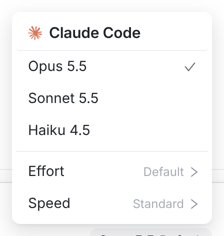
内置 Claude 会话：没有 Provider 行可切，标题领衔菜单。
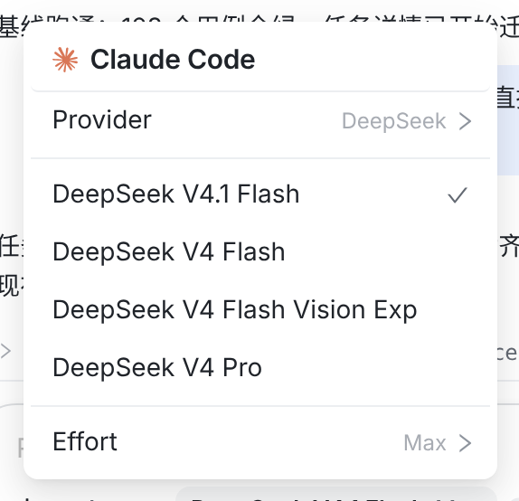
手机：同一个菜单、同一条标题。
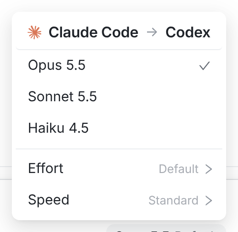
切换中：下一条要换引擎时，标题直接说去向 —— Claude Code → Codex。
切换中的规则：engineTitleFor(当前 provider, …, 待生效的 provider) —— 只有当两端引擎不同才画箭头；同一个 CLI 的两个 provider 不画（Claude Code → Claude Code 没有信息量，那件事由 Provider 行说）。图里的箭头是照组件的画法补的：菜单的 Provider 行今天只列同一个 CLI 的 provider，所以这条状态要等跨引擎的选择（任务改派、或将来允许跨引擎切换）才出现在真实数据里——规则已经就位。
3四个控件各自回答什么（加这行不会和底部 chip 重复）
| 控件 | 回答的问题 | 性质 |
|---|
| 菜单标题 · 引擎名（新） | 这次运行由哪个引擎驱动 | 只读展示 |
| 菜单 · Provider | 下一条消息发给哪个 endpoint / 账号 | 可切换 |
| 菜单 · 模型行 ✓ / Effort / Speed | 下一条消息用哪个模型、档位 | 可切换 |
| composer 底部 chip | 下一条消息的模型 + 档位（折叠态） | 可切换（菜单的入口） |
③ 可选补充
4想「不打开菜单也一直看得到」：头部常驻 chip
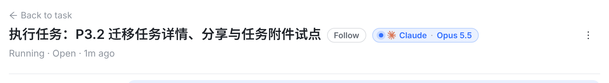
桌面：标题行 Follow 之后一个安静的小 chip：✳ Claude · Opus 5.5（运行中可以带一个活动点）。
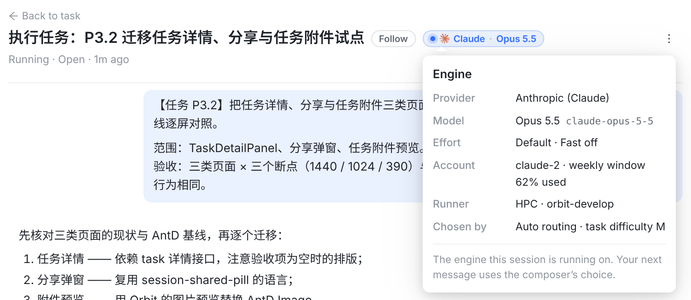
点开是详情卡：Provider / Model / Effort / Account / Runner / 选它的原因，再补一句「你的下一条消息用 composer 的选择」。
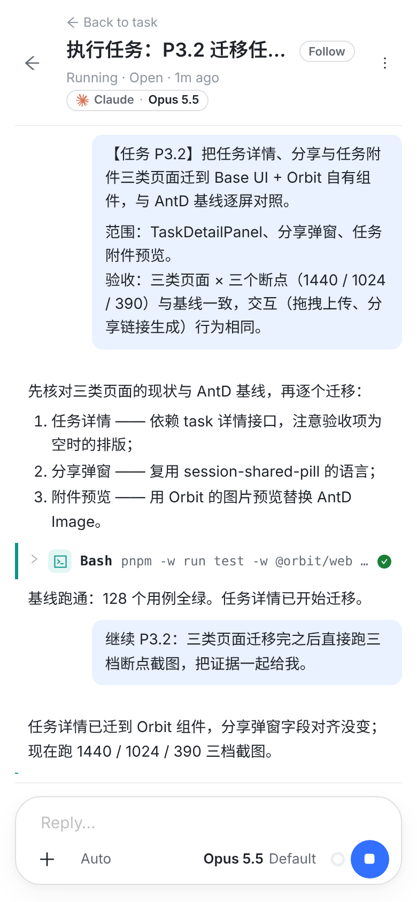
手机：chip 放状态行 —— Running · ✳ Claude Opus 5.5 · 1m ago。
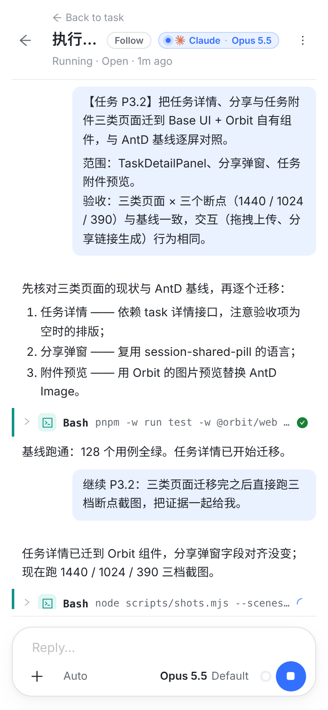
反例：chip 塞进手机标题行会把标题挤到只剩「执行…」。所以手机要放状态行。
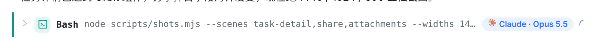
另一处可选：把引擎标在运行中的那一轮上（行内会更挤，只在需要「哪一轮跑的」时用）。
5三个决定（已定，实现按这个来）
- 借壳不补注：DeepSeek 的模型经 Claude Code 跑，标题只写 Claude Code，不加说明、不加 tooltip。
- 切换中显示去向：下一条会换引擎时，标题写成 Claude Code → Codex；两端同引擎（同一 CLI 的两个 provider）不画箭头。
- 额度不进标题：claude-2 · weekly 62% 这类信息留在 Provider 子菜单里，标题只有引擎名。
实现落点：lib/sessionProviderChoices.ts 的 engineTitleFor()（纯函数，含箭头规则）＋ WorkspaceView.tsx 的 modelMenuItems 第一项 ＋ index.css 的 .composer-engine-title；单测在 sessionProviderChoices.test.ts（引擎名/品牌标/箭头规则）与 WorkspaceView.modelControl.test.tsx（菜单真的以它为标题、点了不发 PATCH）。